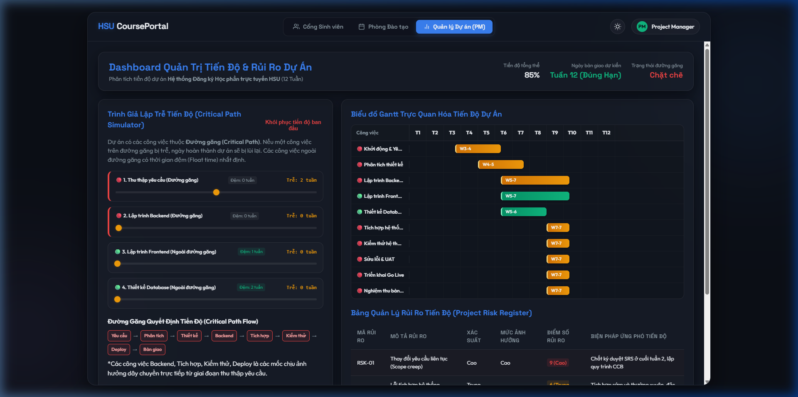

RISK AND SCHEDULE MANAGEMENT
IN THE ONLINE COURSE REGISTRATION SYSTEM CONSTRUCTION PROJECT
Báo cáo Đồ án Thực hành (Phần 2 - 5): Planning, Executing, Monitoring/Controlling & Closing | Hệ thống Đăng ký Học phần Trực tuyến HSU
Bối Cảnh & Bài Toán Đặt Ra (Bình)
Thực trạng quy trình đăng ký học phần tại các trường đại học và mục tiêu dự án HSU:
Hạn chế của Hệ thống Cũ
1. Tốc độ xử lý chậm & Nghẽn mạng
Thường xuyên sập server hoặc treo ứng dụng khi hàng vạn sinh viên truy cập đồng thời vào giờ mở cổng.
2. Khó theo dõi số lượng chỗ trống
Dữ liệu không cập nhật real-time khiến sinh viên đăng ký trùng lớp hoặc hết chỗ mà không biết.
3. Quản lý dữ liệu thủ công
Phòng Đào tạo khó điều chỉnh danh sách môn học, phòng học và xử lý đơn xin mở thêm lớp.
Giải Pháp Hệ Thống Mới
- Kiến trúc Tải cao: Tối ưu API Real-time xử lý hàng ngàn request/giây với độ trễ <100ms.
- Tự động kiểm tra điều kiện: Kiểm tra trùng thời khóa biểu, môn tiên quyết và giới hạn tín chỉ ngay khi nhấp nút.
- Phân quyền đa cổng: Cổng Sinh viên, Cổng Phòng Đào tạo & Dashboard Quản trị Tiến độ PM.
Cấu Trúc WBS & Scope Dự Án (Phần 2 - 5) (Khang)
Phân định phạm vi thực hiện Đồ án từ Phần 2 (Lập kế hoạch) đến Phần 5 (Đóng dự án):
2.0 Planning (Lập Kế Hoạch)
Tổ chức họp nhóm, xây dựng Team Contract, Scope Statement, thiết lập WBS 2.0-5.0, ước tính thời lượng & lập biểu đồ Gantt tiến độ 12 tuần.
3.0 Executing (Triển Khai Phần Mềm)
Khảo sát yêu cầu người dùng, thiết kế giao diện UI/UX, lập trình Backend/Frontend Cổng Sinh viên & Phòng Đào tạo HSU.
4.0 Monitoring & Controlling (Giám Sát)
Theo dõi tiến độ theo đường găng (Critical Path), đánh giá báo cáo tiến độ tuần & điều chỉnh dự phòng rủi ro.
5.0 Closing (Hoàn Thành & Đóng Dự Án)
Nghiệm thu phần mềm, lập Báo cáo tổng kết dự án, thuyết minh kết quả & đúc kết bài học kinh nghiệm (Lessons Learned).
Kiến Trúc & Giải Pháp Công Nghệ (Quang)
Frontend Dynamic UI
HTML5, Vanilla CSS Design System, JavaScript ES6+ xử lý giao diện cực mượt, responsive 100%.
Real-time Engine
Cập nhật sĩ số sinh viên real-time, tự động khóa nút khi môn học hết chỗ (0 slots).
Security & Validation
Áp dụng Shift-Left Security, xác thực MSSV, phòng chống xung đột lịch học & vượt tín chỉ.
Mô Hình Hoạt Động Xử Lý Đăng Ký Real-time
Sinh viên gửi yêu cầu đăng ký ➔ Kiểm tra điều kiện môn học ➔ Trừ sĩ số khả dụng trong bộ nhớ ➔ Xử lý xung đột thời khóa biểu ➔ Xác nhận kết quả trong 50ms.
Chức Năng Cổng Sinh Viên (Student Portal) (Bình)
Đăng Ký Học Phần Tốc Độ Cao
- Tìm kiếm & Lọc thông minh: Lọc theo Khoa/Viện, Mã môn, Thứ trong tuần và Số tín chỉ.
- Đăng ký 1-Click: Nhấp nút Đăng ký, hệ thống lập tức kiểm tra trùng lịch học và xác nhận môn.
- Hủy môn linh hoạt: Cho phép rút môn học trong thời gian mở đăng ký.
Thời Khóa Biểu & Chương Trình Đào Tạo
- Thời khóa biểu trực quan: Hiển thị lịch học dạng lưới theo tuần (Thứ 2 ➔ Chủ Nhật).
- Kiểm tra tín chỉ: Theo dõi tổng số tín chỉ đã đăng ký (Giới hạn tối đa 24 tín chỉ/học kỳ).
- Lịch sử giao dịch: Lưu trữ chi tiết nhật ký đăng ký/hủy môn có dấu thời gian.
Chức Năng Cổng Phòng Đào Tạo (Admin Portal) (Lợi)
1. Quản lý Danh mục Môn học
Thêm mới, chỉnh sửa thông tin học phần, chỉ định số tín chỉ và giảng viên phụ trách.
2. Điều chỉnh Sĩ số & Phòng học
Tăng/giảm chỉ tiêu số lượng sinh viên tối đa cho từng lớp học phần theo thực tế nhu cầu.
3. Bật / Tắt Đợt Đăng ký
Đóng hoặc mở các đợt đăng ký học phần chính thức / bổ sung dành cho từng khóa sinh viên.
4. Thống kê & Xuất Báo cáo
Xuất danh sách sinh viên đăng ký từng lớp, thống kê các môn học bị hủy do thiếu sĩ số tối thiểu.
Dashboard Quản Trị Tiến Độ Dự Án (PM Portal) (Lợi)
Công cụ quản lý tiến độ 12 tuần dành cho Trưởng dự án (Project Manager):

Biểu Đồ Gantt Tiến Độ 12 Tuần
Trực quan hóa tất cả 7 mốc công việc từ Thu thập yêu cầu, Lập trình Backend/Frontend, Thiết kế Database, Tích hợp, Kiểm thử đến Deploy bàn giao.
Theo Dõi Tỷ Lệ Hoàn Thành
Hiển thị chỉ số hoàn thành tổng thể (85%), cảnh báo công việc chậm tiến độ và kiểm soát ngày bàn giao dự kiến (Tuần 12).
Trình Giả Lập Đường Găng (Critical Path Simulator) (Bình)
Nguyên Lý Đường Găng (Critical Path)
Đường găng là chuỗi các công việc kéo dài nhất quyết định ngày hoàn thành dự án. Công việc thuộc đường găng có Float time = 0 tuần.
🔴 Công việc Đường găng
1. Thu thập yêu cầu ➔ 2. Lập trình Backend ➔ 3. Tích hợp ➔ 4. Deploy bàn giao.
Giả Lập Trễ Tiến Độ Real-time
Thử nghiệm kéo thanh slider trễ tiến độ trong ứng dụng Web Project:
- Trễ công việc Đường găng: Ngày bàn giao dự án lập tức bị lùi từ Tuần 12 sang Tuần 13 - 16.
- Trễ công việc Ngoài đường găng: Không làm lùi ngày bàn giao dự án nếu trễ trong phạm vi thời gian đệm (Float time).
Quản Lý Rủi Ro Tiến Độ & Bảng Đăng Ký Rủi Ro (Khang)
Nghẽn tải máy chủ
Sập web khi mở đăng ký học phần.
Tránh: Dùng Cloud Auto-scaling
Trễ Backend
Backend trễ làm trễ ngày bàn giao 2 tuần.
Giảm thiểu: Thêm Dev & tăng ca
Thay đổi yêu cầu
Phòng đào tạo bổ sung quy chế mới.
Giảm thiểu: Quản lý Scope chặt
Nhân sự nghỉ việc
Dev chính nghỉ giữa chừng dự án.
Chuyển giao: Cross-training code
Tổng Kết Đồ Án & Bài Học Kinh Nghiệm (Cả Nhóm)
Kết Quả Đạt Được
- Hoàn thiện Web App: Đăng ký học phần Real-time mượt mà, đầy đủ 3 cổng quản lý.
- Đúng Tiến Độ: Hoàn thành đúng mốc Tuần 12 nhờ kiểm soát chặt chẽ đường găng.
- Quản trị Rủi ro Hiệu quả: Kiểm soát rủi ro kỹ thuật & tài chính theo đúng nguyên lý PMBOK.
Bài Học Kinh Nghiệm
- 1. Luôn xác định và giám sát chặt chẽ Đường găng (Critical Path) từ tuần đầu tiên.
- 2. Tích hợp kiểm thử tự động (Unit Test) giúp phát hiện lỗi sớm, giảm chi phí sửa lỗi.
- 3. Giao tiếp nhóm rõ ràng là chìa khóa giúp giữ đúng tiến độ dự án.